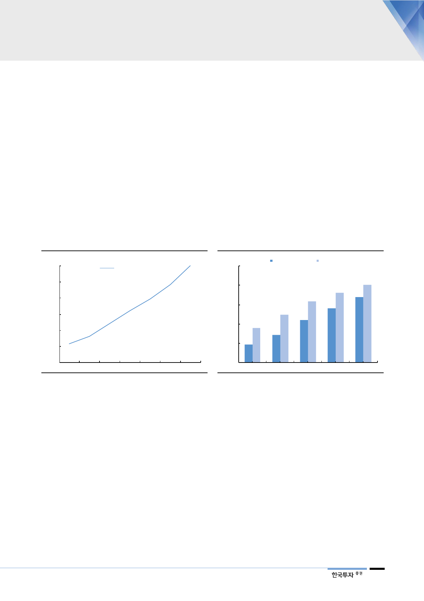

‘설화수’, 중국 메이저
브랜드의 가능성
그러나 상기 불균형은 해소될 수 있을 것으로 예상한다. 아모레퍼시픽의 중국 럭
셔리 사업 매출 비중은 2018년 18%로 추정되나 ‘설화수’가 중국에 진출한
2013년부터 꾸준히 상승해왔다. 2006년 진출한 ‘후’에 비해 다소 느린 진출이었
으나 2018년 백화점 매장수는 170개로 Whoo의 85%까지 달성했다. 작년 기준
Whoo 매출액의 50% 수준에 그치는 것으로 추정되는데, 점당 매출액이 현저하
게 낮은 것으로 추정된다. 중국 내 ‘설화수’ 브랜드 인지도 상승을 위한 공격적인
마케팅이 진행되고 있으며 ASP가 높은 제품들의 중국 진출이 진행되고 있다.
중국 내 상위 글로벌 명품 브랜드들의 연 매출 규모는 1조원, 매장수는 250개 내
외로 파악된다. 설화수 매출액은 현재 글로벌 브랜드의 1/4 수준에 불과하나 유
통망 확장과 마케팅 투자가 이루어진 만큼 매출 증가 여력이 있다는 판단이다. 무
엇보다, 국내 면세점을 위주로 이미 형성된 중국인들의 선호도가 현지로 확산될
수 있을 것이다. 오프라인 채널 및 마케팅 투자에 힘입어 Tmall 내 flagship
store 운영 등 온라인 사업과 역직구 사업 확대 또한 속도를 낼 수 있을 것이다.
[그림 14] 아모레 중국 럭셔리 비중 확대될 것
(%)
30
25
중국 럭셔리 사업 비중
20
15
10
5
0
2014 2015 2016
자료: 아모레퍼시픽, 한국투자증권
20 17
2018 2019F 2020F
[그림 15] 설화수가 key, 매장 확장은 상당 이루어져
(개)
25 0
설화수 중국 매장 Wh oo
20 0
15 0
10 0
50
0
20 14
20 15
자료: 아모레퍼시픽, 한국투자증권
20 16
20 17
20 18
중국 럭셔리 라인업 강화
이에 ‘아이오페’와 ‘헤라’ 등 다른 럭셔리 브랜드들 또한 중국 현지 백화점에 입점
하고 있다. 양 브랜드 모두 각각 30개, 21개 백화점 매장을 확보했다. ‘설화수’에
이은 히트 브랜드가 될 지 판단은 아직 이르나 ‘설화수’와 ‘라네즈’ 다음으로 국내
에서도 인지도가 높은 브랜드이다. 중국인 수요가 아직 낮은 ‘헤라’는 국내에서
면세점을 제외한 백화점 매출에서 설화수에 이어 2위를 기록했을 정도로 인기 브
랜드였다는 점에서 향후 중국 내 성장 잠재력이 있다.
9